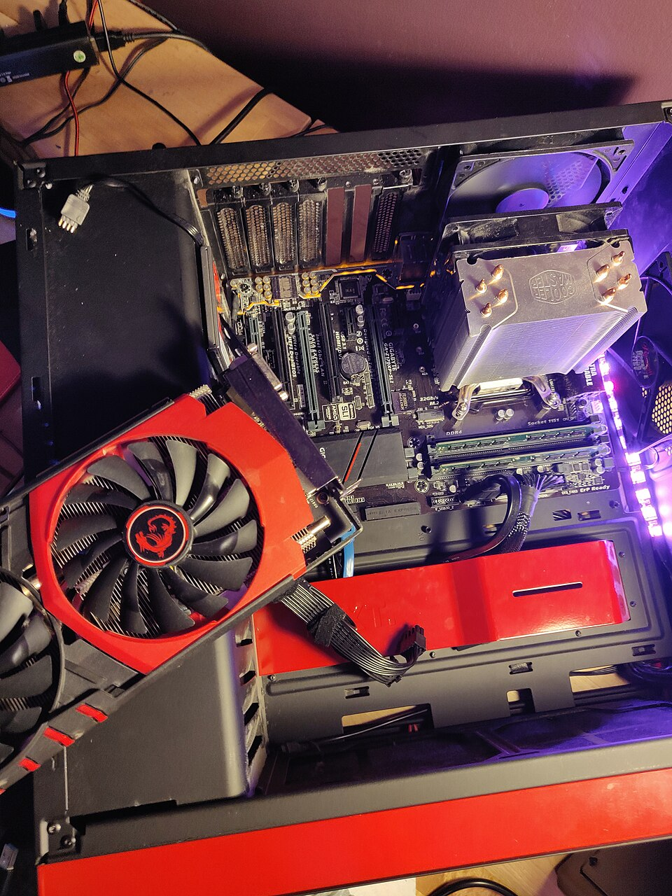

Про компанію

ByteMarket — це віртуальний магазин комп'ютерних аксесуарів. Ми допомагаємо клієнтам обрати сумісні та надійні комплектуючі для домашніх і офісних ПК.
У магазині представлені GPU,
оптичні пристрої та накопичувачі. Наш принцип:
просто пояснюємо — точно підбираємо
.
Щоб знайти товар на сторінці, натисніть Ctrl + F.
Каталог аксесуарів
| Категорія | Тип | Виробник | Пам'ять / частота / об'єм |
|---|---|---|---|
| Графічний адаптер | Дискретний | ASUS | 8 ГБ |
| Пристрій CDROM/CDRW | Внутрішній CDRW | LG | 52x |
| Вінчестер | HDD | Western Digital | 2 ТБ |
Форма підбору комплектуючих
Контакти
Понеділок - п'ятниця: 09:00 - 18:00 Субота: 10:00 - 15:00 Неділя: вихіднийм. Чернівці, вул. Комп'ютерна, 5
Телефон: +38 (000) 000-00-00
Email: info@bytemarket.example